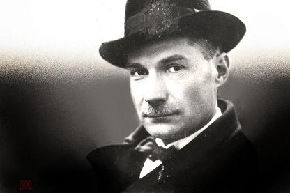

Русский писатель-пророк: какое будущее предсказал России Евгений Замятин
Роман-антиутопия Евгения Замятина «Мы» повлиял на творчество многих писателей более позднего времени: Олдоса Хаксли, Джорджа Оруэлла, Курта Воннегута. Это рассказ о тоталитарном будущем, в котором автор высказал множество «идеологически чуждых» идей, которые нашли воплощение в современности.
Послание внеземным цивилизациям
По сюжету романа, готовится полет в дальний космос корабля «Интеграл», груз которого состоит из сочинений «о красоте и величии Единого Государства». Аналогичный груз земляне поместили на космическую станцию «Вояджер-1», запущенную в 1977 году, — золотую табличку с набором основных сведений о нашей планете и цивилизации. Возможно, когда-то эти сведения попадут в руки (лапы, щупальца, присоски) внеземного разума.
Небоскребы из стекла и бетона
«Божественные параллелепипеды прозрачных жилищ», которыми любуется герой книги, появились в Нью-Йорке в 1958 году. Это был первый небоскреб Seagram Building, построенный по новой технологии: на железобетонный «скелет» навешивались стеклянные панели, заменяющие стены. Подавляющее большинство современных высотных зданий построены аналогичным образом.
Искусственная еда
Население Единого Государства в романе Замятина питается искусственной едой, производимой из нефти. В современном мире до нефти дело пока не дошло, но в 2013 году профессор Университета Маастрихта Марк Пост представил в Лондоне бургер с котлетой из искусственно выращенных стволовых клеток коровы. Дегустаторы в целом остались довольны.
Лоботомия
В тоталитарном мире Замятина людей «лечат» от фантазии прижиганием некоторых частей мозга. В 1936 году аналогичное «лечение» использовал профессор нейрохирургии Алмейда Лима. Лоботомия действительно давала неплохие результаты, но недолговременные. При этом происходила деградация и разрушение личности. В 1950-х операция была официально запрещена, в том числе и в СССР.
Системы уличного видеонаблюдения
Первые системы уличного видеонаблюдения появились в 1956 году в Гамбурге. Они предназначались для регулирования дорожного движения. А десятилетием позже в Великобритании уличные камеры стали применяться и в целях безопасности. Сегодня система наблюдения, записывающая уличные разговоры, что описывается в романе «Мы», уже ни у кого не вызывает удивления.